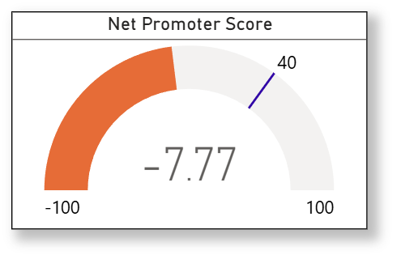

Net Promoter Score (NPS)
Description
Net Promoter Score (NPS) measures customer loyalty by asking, “How likely are you to recommend our company/product/service to a friend or colleague?” Respondents answer on a scale from 0 to 10. Based on their responses, customers are grouped into:
- Promoters (9-10): Loyal enthusiasts who will keep buying and refer others.
- Passives (7-8): Satisfied but unenthusiastic customers vulnerable to competitors.
- Detractors (0-6): Unhappy customers who may damage your brand through negative word of mouth.
NPS is calculated by subtracting the percentage of Detractors from the percentage of Promoters.
Visual Example

DAX Formula
SQL Statement
Usage Notes
- Requires numeric responses from 0 to 10 in a column like
NPS_Score. - Optionally filter to most recent survey responses per customer.
- Segment by product line, geography, or channel for deeper insights.
- Benchmark your NPS against industry averages for context.